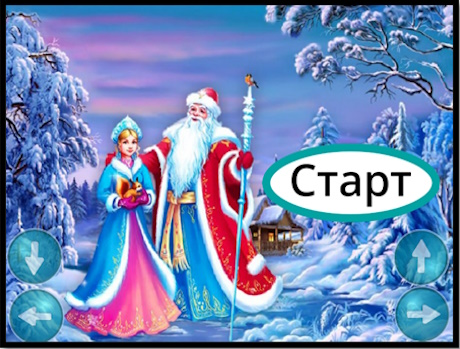
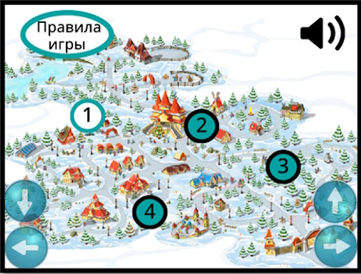
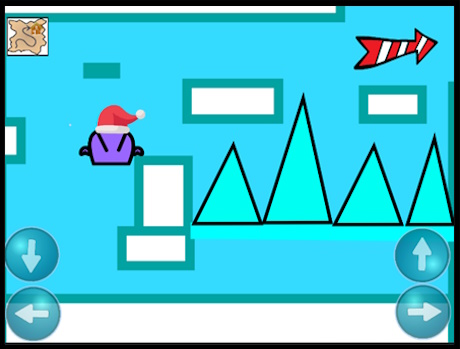
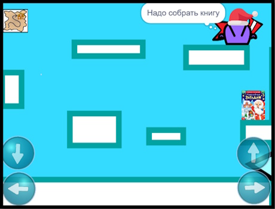
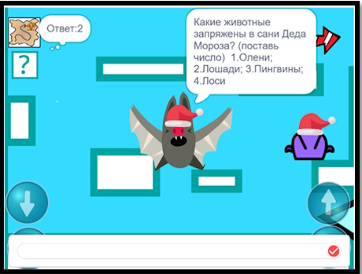
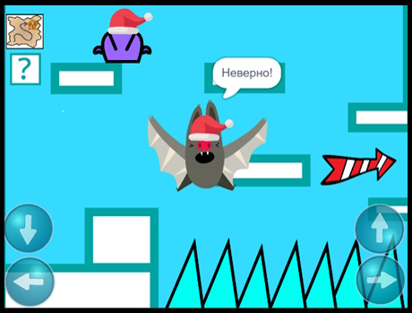
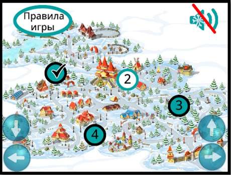
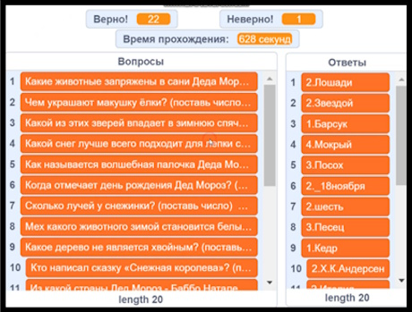

«Обучающий зимний Паркур» — это увлекательный игровой проект, который способствует развитию познавательной и обучающей деятельности ребят, помогает развивать физические навыки, координацию и ловкость через паркур. В этом специальном выпуске мы отмечаем праздник Деда Мороза и Снегурочки! Присоединяйтесь к нам в зимнем приключении, где вы сможете помочь Кнопу преодолеть различные препятствия.

Добро пожаловать в гид по игре «Обучающий зимний Паркур». Главный герой Кноп любит паркурить, а еще он любит узнавать новое.
При запуске игры вы попадете в главное меню, где можно увидеть карту с уровнями. На зимней карте 4 уровня, которые открываются по мере прохождения игры. Вопросы с каждым уровнем становятся сложнее.
В левом верхнем углу есть кнопка Правила игры. В правом верхнем углу экрана можно включать/отключать звук игры.
Задача игрока собирать книжки и проходить уровни. В книжках можно найти интересные вопросы про Деда Мороза, Снегурочку и Новый год!

В каждом уровне содержится по 4 локации. Кнопу необходимо перепрыгивать по снежным платформам, чтобы преодолеть препятствия, добраться до книжки и перейти в следующую локацию.
Перемещаться вперед/назад нужно при помощи стрелочек вправо/влево на экране или клавиатуре, а еще Кноп умеет прыгать (кнопка вверх) и приседать (кнопка вниз).
Своими ручками он может зацепляться за край платформы, это очень помогает ему.

Если попасть на ледяной шип, то придется проходить уровень заново.
В каждой локации есть книжка. Пока Кноп не соберет ее, перейти на следующую локацию не получится.

Когда ты соберешь книжку, то милая летучая мышь в новогоднем колпачке задаст тебе вопрос. Если не знаешь ответ на вопрос из книжки, то воспользуйся подсказкой - нажми на вопрос в левом верхнем углу экрана.

Ты можешь не пользоватьcя подсказкой, а проверить свои знания. Если ответишь неверно, то летучая мышь сообщит об этом, но ты можешь пройти локацию дальше.

Красно-белые стрелочки помогут найти тебе выход.
Когда пройдешь все локации одного уровня, то откроется следующий.

Вопросы с каждым уровнем становятся сложнее. А препятствия всё труднее.
Когда пройдешь все уровни, то можешь зайти в Ответы и посмотреть свои результаты. Ты всегда можешь пройти игру заново и улучшить свой результат!

Посмотрите видео с прохожденем уровней игры! Узнайте, как легко и весело преодолевать препятствия вместе с Кнопом!
Готовы к приключениям? Нажмите на кнопку ниже, чтобы начать игру и помочь Кнопу в его зимнем путешествии!
Играть сейчас!